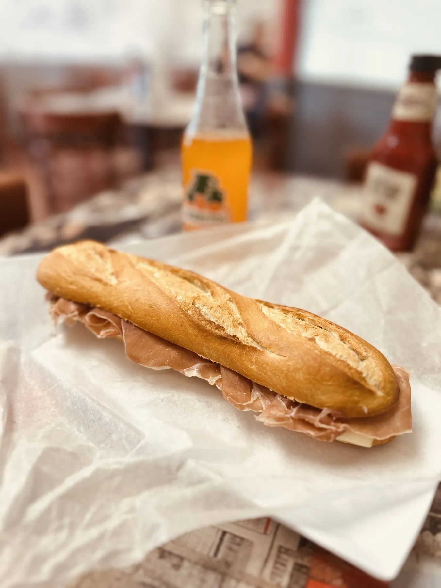

Cuban sandwiches
The pressed Cuban one guest ranked first among every Cuban they have had in Tampa. Also a Palomilla steak sandwich, a Mity Burger and the Garlic Goodness.
Cuban cafe · Benjamin Rd, Tampa
Pressed Cuban sandwiches, a cafe con leche that guests call just right, breakfast, burgers and pizza, served with some jazz on the speakers.

What guests order first
Cuban sandwiches, breakfast and coffee, made for guests on Benjamin Rd.

The pressed Cuban one guest ranked first among every Cuban they have had in Tampa. Also a Palomilla steak sandwich, a Mity Burger and the Garlic Goodness.

Eggs, potatoes and steak on a plate. One guest came back the day after lunch for breakfast.
Cafe con leche one guest called perfect, and cappuccinos poured with a leaf on top.


4.7 ★ · 564 Google reviews
I loved the quality of the food. My first visit I ordered the burger and chicken soup. It tasted homemade. I came back the next day and had breakfast. The Cuban sandwich has to be the best I’ve had in Tampa. Glad I found this spot.
Stopped in for lunch and it was great! Joe provided us with some great suggestions for our first time. We each got something different. Everything was delicious but the winner was the Garlic Goodness! Melty cheese yum! Palomilla Steak sandwich and Mity Burger came in close 2nd. Got cuban to take home.We will definitely be back and sharing this place with our friends!
The cafe con leche was literally so perfect. Not too hot. No to bitter, just right amount of sugar. The food was hot and delicious and didn't take long after all!
Nuestra historia
Mity Nice Cafe is a Cuban cafe at 5944 Benjamin Rd in Tampa, open seven days a week. A red sign with a fried egg on it marks the spot.
Guests tell us the food tastes homemade, the room is clean and comfortable, and Joe has great suggestions for first-timers. Stay for lunch, take a Cuban home, or grab a cappuccino. We're glad you found us.

Ven a vernos
5944 Benjamin Rd, Tampa, FL 33634
Open every day. Take a Cuban to go, or grab pizza to-go.